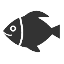
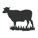
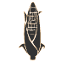

Toggle navigation
Data Statistik
Portal
Beranda
Pertanian dan Pertambangan
Publikasi
Data Statistik Pertanian dan Pertambangan
Selamat datang di laman Data Statistik Pertanian dan Pertambangan.
Silahkan klik menu yang tersedia dibawah ini untuk mencari informasi data statistik
Hortikultura
Kehutanan

Perikanan
Perkebunan
Pertambangan

Peternakan

Tanaman Pangan
© 2015 Rahmat Sabilludin Nurmughni - ITFair Competition
Masukan dan Bantuan
Hubungi Kami